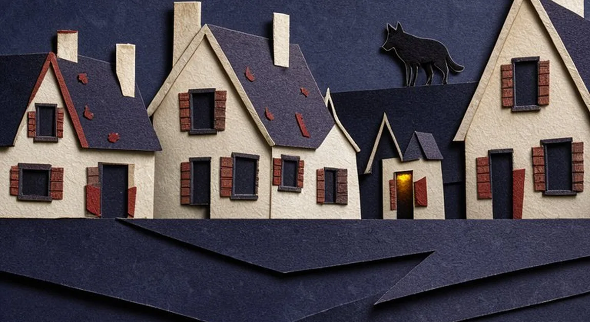

<title>Midnight Village Board</title>
<meta name="claude:viewport-fit-sides" content="cover">
<link rel="preconnect" href="https://fonts.googleapis.com">
<link rel="preconnect" href="https://fonts.gstatic.com" crossorigin>
<link rel="stylesheet" href="https://fonts.googleapis.com/css2?family=Figtree:wght@400;500;600;700&family=Gloock&display=swap">
<style>
/* Layout: one phone-width column of cut-paper slips on the game's day (light) or night (dark) ground;
   a strip of the village art on top, then: needs an answer, look at this, decided, done lately. */
:root {
  --ground: #D8D4E2;      /* day sky, as on the game's day screens */
  --paper: #EEE7D6;       /* bone paper */
  --paper-2: #E2DAC6;
  --ink: #14172F;         /* midnight ink */
  --ink-soft: #4A4E70;
  --ink-faint: #7A7D99;
  --cut: #14172F;         /* hard paper shadow */
  --lamp: #E7A33E;        /* lantern amber */
  --lamp-ink: #14172F;
  --blood: #A3242A;
  --line: rgba(20, 23, 47, .14);
  --pic-ground: #14172F;
  --chip: #14172F;
  --chip-ink: #EEE7D6;
  --btn: #F6F1E4;
  --btn-ink: #14172F;
  --focus: #A3242A;
  --f-display: "Gloock", "Georgia", "Times New Roman", serif;
  --f-body: "Figtree", system-ui, -apple-system, "Segoe UI", Roboto, sans-serif;
  --r: 6px;
}
@media (prefers-color-scheme: dark) { :root:not([data-theme="light"]) {
  --ground: #14172F; --paper: #1F2349; --paper-2: #282D5A; --ink: #EEE7D6; --ink-soft: #B9B6C9;
  --ink-faint: #8A8CA8; --cut: #07081A; --lamp: #E7A33E; --lamp-ink: #14172F; --blood: #D24B4B;
  --line: rgba(238, 231, 214, .14); --pic-ground: #0C0E22; --chip: #EEE7D6; --chip-ink: #14172F;
  --btn: #2E3366; --btn-ink: #EEE7D6; --focus: #E7A33E; color-scheme: dark } }
:root[data-theme="dark"] {
  --ground: #14172F; --paper: #1F2349; --paper-2: #282D5A; --ink: #EEE7D6; --ink-soft: #B9B6C9;
  --ink-faint: #8A8CA8; --cut: #07081A; --lamp: #E7A33E; --lamp-ink: #14172F; --blood: #D24B4B;
  --line: rgba(238, 231, 214, .14); --pic-ground: #0C0E22; --chip: #EEE7D6; --chip-ink: #14172F;
  --btn: #2E3366; --btn-ink: #EEE7D6; --focus: #E7A33E; color-scheme: dark }

* { box-sizing: border-box }
html { -webkit-text-size-adjust: 100% }
body { background: var(--ground); color: var(--ink); font-family: var(--f-body); font-size: 16px; line-height: 1.4; }
button, input { font: inherit; color: inherit }
:focus-visible { outline: 3px solid var(--focus); outline-offset: 2px }

.wrap { max-width: 600px; margin: 0 auto; padding-left: max(16px, env(safe-area-inset-left, 0px)); padding-right: max(16px, env(safe-area-inset-right, 0px)); }

/* top: the village strip */
.top { position: relative; background: #14172F; color: #EEE7D6; overflow: hidden; }
.top img.band { position: absolute; inset: 0; width: 100%; height: 100%; object-fit: cover; object-position: 50% 40%; max-width: none; }
.top::after { content: ""; position: absolute; inset: 0; background: linear-gradient(180deg, rgba(20,23,47,.05) 0%, rgba(20,23,47,.35) 32%, rgba(20,23,47,.9) 64%, #14172F 100%); }
.top .wrap { position: relative; z-index: 1; padding-block: 120px 18px; display: grid; gap: 14px }
.eyebrow { font-size: 12px; letter-spacing: .14em; text-transform: uppercase; font-weight: 600; opacity: .8 }
h1 { font-family: var(--f-display); font-weight: 400; font-size: 40px; line-height: 1; margin: 0; text-wrap: balance }
.tally { display: flex; flex-wrap: wrap; gap: 8px }
.tally a { display: inline-flex; align-items: baseline; gap: 7px; padding: 8px 12px 9px; border-radius: 999px; background: rgba(238,231,214,.12); border: 1px solid rgba(238,231,214,.28); color: #EEE7D6; text-decoration: none; font-weight: 500; font-size: 14px }
.tally a b { font-family: var(--f-display); font-weight: 400; font-size: 20px; font-variant-numeric: tabular-nums; line-height: 1 }
.tally a.hot { background: #E7A33E; color: #14172F; border-color: #E7A33E }
.live { font-size: 13px; opacity: .75; min-height: 1.2em }

main.wrap { padding-block: 22px 64px; display: grid; gap: 40px }
section { display: grid; gap: 18px; min-width: 0 }
.sec-head { display: grid; gap: 6px }
h2 { font-family: var(--f-display); font-weight: 400; font-size: 30px; line-height: 1.05; margin: 0; display: flex; align-items: center; gap: 12px; text-wrap: balance }
h2 .n { font-family: var(--f-body); font-size: 14px; font-weight: 700; background: var(--chip); color: var(--chip-ink); border-radius: 999px; min-width: 28px; height: 28px; display: inline-grid; place-items: center; padding: 0 8px; font-variant-numeric: tabular-nums }
.intro { margin: 0; color: var(--ink-soft); font-size: 15px; max-width: 60ch }
.stack { display: grid; gap: 26px }
.empty { margin: 0; padding: 18px; border: 2px dashed var(--line); border-radius: var(--r); color: var(--ink-soft); font-size: 15px }

/* a card: one paper slip */
.card { background: var(--paper); border-radius: var(--r); box-shadow: 5px 6px 0 var(--cut); overflow: hidden; display: grid; min-width: 0; transition: opacity .22s ease, transform .22s ease }
.card.leaving { opacity: 0; transform: translateY(-8px) scale(.98) }
.pic { position: relative; display: block; width: 100%; padding: 0; border: 0; background: var(--pic-ground); cursor: zoom-in }
.pic img { display: block; width: 100%; max-width: 100%; height: 100%; object-fit: cover }
.pic.one { aspect-ratio: 4 / 5 }
.pic.two { display: grid; grid-template-columns: 1fr 1fr; gap: 6px; padding: 6px; aspect-ratio: auto }
.pic.two img { aspect-ratio: 390 / 844; object-fit: contain; border-radius: 3px }
.pic .cap { position: absolute; left: 10px; bottom: 10px; background: rgba(20,23,47,.86); color: #EEE7D6; font-size: 12px; font-weight: 600; padding: 4px 8px; border-radius: 4px; letter-spacing: .02em }
.pic.two .cap { position: static; justify-self: start; margin-top: 4px }
.pic.two figure { margin: 0; display: grid; min-width: 0 }
.zoom { position: absolute; right: 10px; top: 10px; width: 36px; height: 36px; border-radius: 50%; background: rgba(20,23,47,.78); display: grid; place-items: center; pointer-events: none }
.zoom svg { width: 18px; height: 18px }

/* before / after slider */
.ba { position: relative; aspect-ratio: 4 / 5; background: var(--pic-ground); overflow: hidden; touch-action: pan-y; user-select: none; -webkit-user-select: none; cursor: ew-resize }
.ba img { position: absolute; inset: 0; width: 100%; height: 100%; max-width: 100%; object-fit: cover; pointer-events: none }
.ba .after { clip-path: inset(0 0 0 var(--x, 50%)) }
.ba .rule { position: absolute; top: 0; bottom: 0; left: var(--x, 50%); width: 3px; margin-left: -1.5px; background: #EEE7D6; box-shadow: 0 0 0 1px rgba(20,23,47,.5) }
.ba .knob { position: absolute; top: 50%; left: var(--x, 50%); width: 48px; height: 48px; margin: -24px 0 0 -24px; border-radius: 50%; background: #E7A33E; border: 3px solid #EEE7D6; display: grid; place-items: center; box-shadow: 2px 3px 0 #14172F }
.ba .lab { position: absolute; top: 10px; background: rgba(20,23,47,.86); color: #EEE7D6; font-size: 12px; font-weight: 700; padding: 4px 8px; border-radius: 4px; letter-spacing: .06em; text-transform: uppercase }
.ba .lab.l { left: 10px } .ba .lab.r { right: 56px }
.ba .open { position: absolute; right: 10px; top: 6px; width: 40px; height: 40px; border-radius: 50%; border: 0; background: rgba(20,23,47,.78); display: grid; place-items: center; cursor: zoom-in }
.ba .open svg { width: 18px; height: 18px }

.body { padding: 16px 16px 14px; display: grid; gap: 12px; min-width: 0 }
.body h3 { font-family: var(--f-display); font-weight: 400; font-size: 24px; line-height: 1.12; margin: 0; text-wrap: balance }
.lines { display: grid; gap: 4px }
.lines p { margin: 0; font-size: 15.5px; color: var(--ink-soft); max-width: 62ch }
.lines p.ask { color: var(--ink); font-weight: 500 }
.choices { display: grid; gap: 10px; grid-template-columns: repeat(auto-fit, minmax(96px, 1fr)); margin-top: 2px }
.choices.long { grid-template-columns: 1fr }
.choice { position: relative; min-height: 56px; padding: 10px 12px; border-radius: var(--r); border: 2px solid var(--ink); background: var(--btn); color: var(--btn-ink); font-weight: 700; font-size: 16px; line-height: 1.15; box-shadow: 3px 4px 0 var(--cut); cursor: pointer; transition: transform .08s ease, box-shadow .08s ease; text-align: center }
.choice:active { transform: translate(3px, 4px); box-shadow: 0 0 0 var(--cut) }
.choice[disabled] { opacity: .5; cursor: not-allowed }
.choice .dflt { display: block; width: max-content; margin: 5px auto 0; font-size: 10.5px; font-weight: 700; letter-spacing: .1em; text-transform: uppercase; background: var(--ink); color: var(--paper); padding: 2px 6px; border-radius: 3px }
.ifnot { margin: 0; font-size: 14px; color: var(--ink-soft); display: flex; gap: 8px; align-items: baseline }
.ifnot { display: block } .ifnot b { color: var(--ink); font-weight: 700 } .ifnot b::after { content: ": " }
.note { width: 100%; min-height: 46px; padding: 10px 12px; border-radius: var(--r); border: 1.5px solid var(--line); background: transparent; font-size: 16px }
.note::placeholder { color: var(--ink-faint) }
.ref { margin: 0; font-size: 12px; color: var(--ink-faint); letter-spacing: .02em }
.viewonly { margin: 0; font-size: 13px; color: var(--ink-soft) }

/* a sound card: the takes to hear (Play, and the same on 10 phones), then the choice */
.slot { display: grid; gap: 14px; min-width: 0 }
.lead { margin: 0; font-size: 16px; font-weight: 500; color: var(--ink-soft); max-width: 60ch }
.takes { display: grid; gap: 12px }
.take { display: grid; grid-template-columns: 44px minmax(0, 1fr); gap: 12px; padding: 12px; background: var(--paper-2); border-radius: var(--r); border: 1.5px solid var(--line) }
.take .tl { width: 44px; height: 44px; border-radius: 50%; background: var(--chip); color: var(--chip-ink); font-family: var(--f-display); font-size: 26px; line-height: 1; display: grid; place-items: center; padding-bottom: 2px }
.take .tb { display: grid; gap: 10px; min-width: 0 }
.take .tn { margin: 0; font-size: 14px; color: var(--ink-soft); min-height: 44px; display: flex; align-items: center }
.take .tn:empty { display: none }
.take button { display: flex; align-items: center; justify-content: center; gap: 10px; width: 100%; border: 2px solid var(--ink); border-radius: var(--r); cursor: pointer; font-weight: 700; line-height: 1.1; text-align: center; transition: transform .08s ease, box-shadow .08s ease }
.take button svg { flex: none }
.take .play { min-height: 60px; font-size: 20px; background: var(--lamp); color: var(--lamp-ink); box-shadow: 3px 4px 0 var(--cut) }
.take .many { min-height: 52px; font-size: 15.5px; background: var(--btn); color: var(--btn-ink); box-shadow: 2px 3px 0 var(--cut) }
.take .play:active, .take .many:active { transform: translate(3px, 4px); box-shadow: 0 0 0 var(--cut) }
.take button[aria-pressed="true"] { background: var(--ink); color: var(--paper) }
.take button[disabled] { opacity: .5; cursor: not-allowed }
.choices.sound { grid-template-columns: repeat(4, minmax(0, 1fr)) }
.choices.sound .choice { padding-inline: 4px }
.choices.sound .dflt { font-size: 9.5px; letter-spacing: .06em; padding: 2px 4px }

/* decided: a ledger */
.ledger { list-style: none; margin: 0; padding: 0; background: var(--paper); border-radius: var(--r); box-shadow: 5px 6px 0 var(--cut); }
.ledger li { display: grid; grid-template-columns: 54px 1fr; gap: 12px; padding: 14px 16px; border-top: 1px solid var(--line); min-width: 0 }
.ledger li:first-child { border-top: 0 }
.ledger li.fresh { background: var(--paper-2) }
.ledger time { font-size: 13px; font-weight: 700; color: var(--ink-soft); font-variant-numeric: tabular-nums; padding-top: 2px; line-height: 1.2 }
.ledger .q { margin: 0; font-weight: 600; font-size: 15px }
.ledger .a { margin: 4px 0 0; font-family: var(--f-display); font-size: 20px; line-height: 1.2; overflow-wrap: anywhere }
.ledger .a.plain { font-family: var(--f-body); font-weight: 700; font-size: 16px }
.ledger .d { margin: 4px 0 0; font-size: 14px; color: var(--ink-soft) }
.ledger .row-actions { margin-top: 8px }
.undo { border: 0; background: none; padding: 6px 0; color: var(--blood); font-weight: 700; font-size: 14px; cursor: pointer; text-decoration: underline; text-underline-offset: 3px; min-height: 36px }

/* done lately: quiet */
.done { list-style: none; margin: 0; padding: 0; display: grid; gap: 10px }
.done li { display: grid; grid-template-columns: 22px 1fr auto; gap: 10px; align-items: start; font-size: 14.5px; color: var(--ink-soft) }
.done .tick { width: 18px; height: 18px; margin-top: 1px; border-radius: 50%; border: 1.5px solid var(--ink-faint); position: relative }
.done .tick::after { content: ""; position: absolute; left: 5px; top: 2px; width: 4px; height: 8px; border: solid var(--ink-soft); border-width: 0 2px 2px 0; transform: rotate(45deg) }
.done time { font-size: 12.5px; color: var(--ink-faint); font-variant-numeric: tabular-nums; white-space: nowrap; padding-top: 1px }
#done h2 { font-size: 22px }

/* full-size viewer */
.viewer { position: fixed; inset: 0; z-index: 50; background: rgba(10, 11, 28, .96); overflow-y: auto; -webkit-overflow-scrolling: touch; overscroll-behavior: contain }
.viewer .inner { max-width: 520px; margin: 0 auto; padding: calc(env(safe-area-inset-top, 0px) + 64px) max(12px, env(safe-area-inset-right, 0px)) calc(env(safe-area-inset-bottom, 0px) + 32px) max(12px, env(safe-area-inset-left, 0px)); display: grid; gap: 18px }
.viewer figure { margin: 0; display: grid; gap: 8px }
.viewer img { width: 100%; max-width: 100%; height: auto; border-radius: 4px; background: #14172F }
.viewer figcaption { color: #EEE7D6; font-size: 14px; font-weight: 600 }
.viewer .x { position: fixed; z-index: 51; top: calc(env(safe-area-inset-top, 0px) + 10px); right: calc(env(safe-area-inset-right, 0px) + 12px); width: 48px; height: 48px; border-radius: 50%; border: 2px solid #EEE7D6; background: #14172F; color: #EEE7D6; display: grid; place-items: center; cursor: pointer }
.viewer .x svg { width: 20px; height: 20px }

.toast { position: fixed; z-index: 60; left: 50%; top: calc(env(safe-area-inset-top, 0px) + 14px); transform: translateX(-50%); max-width: calc(100% - 32px); background: var(--chip); color: var(--chip-ink); padding: 12px 16px; border-radius: var(--r); font-weight: 600; font-size: 15px; box-shadow: 3px 4px 0 var(--cut) }

@media (min-width: 640px) {
  h1 { font-size: 52px }
  .top .wrap { padding-block: 170px 22px }
}
@media (prefers-reduced-motion: reduce) {
  .card, .choice, .take button { transition: none }
}
</style>

<header class="top">
  
  <div class="wrap">
    <div class="eyebrow">Midnight Village</div>
    <h1>Needs your eyes</h1>
    <nav class="tally" id="tally" aria-label="Sections"></nav>
    <div class="live" id="live">Opening the board…</div>
  </div>
</header>

<main class="wrap" id="main">
  <section id="answer" aria-labelledby="h-answer">
    <div class="sec-head"><h2 id="h-answer">Needs your answer <span class="n" id="n-answer" hidden></span></h2></div>
    <div class="stack" id="list-answer"><p class="empty">Questions for you appear here, each with big buttons to answer.</p></div>
  </section>

  <section id="look" aria-labelledby="h-look">
    <div class="sec-head"><h2 id="h-look">Look at this <span class="n" id="n-look" hidden></span></h2><p class="intro" id="look-intro" hidden></p></div>
    <div class="stack" id="list-look"><p class="empty">Pictures to check appear here, with a before and after where something changed.</p></div>
  </section>

  <section id="decided" aria-labelledby="h-decided">
    <div class="sec-head"><h2 id="h-decided">Decided</h2><p class="intro">What you chose, newest first.</p></div>
    <div id="list-decided"><p class="empty">Your answers are kept here.</p></div>
  </section>

  <section id="done" aria-labelledby="h-done">
    <div class="sec-head"><h2 id="h-done">Done lately</h2></div>
    <div id="list-done"><p class="empty">Finished work shows here.</p></div>
  </section>
</main>

<script>
(function () {
  "use strict";
  var ICON_ZOOM = '<svg viewBox="0 0 24 24" fill="none" stroke="#EEE7D6" stroke-width="2.4" stroke-linecap="round"><path d="M14 4h6v6M10 20H4v-6M20 4l-7 7M4 20l7-7"/></svg>';
  var ICON_X = '<svg viewBox="0 0 24 24" fill="none" stroke="currentColor" stroke-width="2.6" stroke-linecap="round"><path d="M5 5l14 14M19 5L5 19"/></svg>';
  var ICON_ARROWS = '<svg viewBox="0 0 24 24" width="22" height="22" fill="none" stroke="#14172F" stroke-width="2.6" stroke-linecap="round" stroke-linejoin="round"><path d="M9 6l-6 6 6 6M15 6l6 6-6 6"/></svg>';

  var S = { items: null, answers: {}, decided: [], done: [], meta: {}, pending: {}, canWrite: null };
  var drafts = {};          // note drafts by item id
  var db = null;
  var loaded = { items: false, answers: false, decided: false, done: false };
  var $ = function (id) { return document.getElementById(id); };

  function el(tag, cls, text) { var e = document.createElement(tag); if (cls) e.className = cls; if (text != null) e.textContent = text; return e; }
  function str(v) { return typeof v === "string" ? v : ""; }
  var MONTHS = ["Jan","Feb","Mar","Apr","May","Jun","Jul","Aug","Sep","Oct","Nov","Dec"];
  function shortDate(v) {
    if (!v) return "";
    var m = /^(\d{4})-(\d{2})-(\d{2})/.exec(String(v));
    if (!m) return String(v);
    return (+m[3]) + " " + MONTHS[+m[2] - 1];
  }
  function sortKey(a, b) {
    var oa = typeof a.order === "number" ? a.order : 1e9, ob = typeof b.order === "number" ? b.order : 1e9;
    return oa - ob || String(a.id).localeCompare(String(b.id));
  }
  function toast(msg) {
    var t = el("div", "toast", msg); t.setAttribute("role", "status");
    document.body.appendChild(t); setTimeout(function () { t.remove(); }, 3200);
  }

  /* ---------- full-size viewer ---------- */
  var lastFocus = null;
  function openViewer(figs) {
    lastFocus = document.activeElement;
    var v = el("div", "viewer"); v.setAttribute("role", "dialog"); v.setAttribute("aria-modal", "true"); v.setAttribute("aria-label", "Full-size picture");
    var x = el("button", "x"); x.innerHTML = ICON_X; x.setAttribute("aria-label", "Close");
    var inner = el("div", "inner");
    figs.forEach(function (f) {
      var fig = el("figure"); var img = el("img"); img.src = f.src; img.alt = str(f.alt);
      fig.appendChild(img); if (f.caption) fig.appendChild(el("figcaption", null, f.caption)); inner.appendChild(fig);
    });
    v.appendChild(inner); document.body.appendChild(v); document.body.appendChild(x);
    var prev = document.body.style.overflow; document.body.style.overflow = "hidden";
    function close() { v.remove(); x.remove(); document.body.style.overflow = prev; document.removeEventListener("keydown", onKey); if (lastFocus && lastFocus.focus) lastFocus.focus(); }
    function onKey(e) { if (e.key === "Escape") close(); }
    x.onclick = close; v.addEventListener("click", function (e) { if (e.target === v || e.target === inner) close(); });
    document.addEventListener("keydown", onKey); x.focus();
  }

  /* ---------- picture area ---------- */
  function pictureArea(it) {
    var before = it.before && it.before.src ? it.before : null, after = it.after && it.after.src ? it.after : null;
    if (before && after) return beforeAfter(it, before, after);
    var pics = Array.isArray(it.pictures) ? it.pictures.filter(function (p) { return p && p.src; }) : [];
    if (!pics.length) return null;
    var b = el("button", "pic " + (pics.length > 1 ? "two" : "one"));
    b.type = "button"; b.setAttribute("aria-label", "See full size: " + str(it.title));
    pics.slice(0, 2).forEach(function (p) {
      var img = el("img"); img.src = p.src; img.alt = str(p.alt); img.loading = "lazy"; img.decoding = "async";
      if (p.pos) img.style.objectPosition = String(p.pos);
      if (pics.length > 1) { var fig = el("figure"); fig.appendChild(img); if (p.caption) fig.appendChild(el("span", "cap", p.caption)); b.appendChild(fig); }
      else { b.appendChild(img); if (p.caption) b.appendChild(el("span", "cap", p.caption)); }
    });
    var z = el("span", "zoom"); z.innerHTML = ICON_ZOOM; b.appendChild(z);
    b.onclick = function () { openViewer(pics); };
    return b;
  }
  function beforeAfter(it, before, after) {
    var box = el("div", "ba"); box.setAttribute("role", "slider"); box.tabIndex = 0;
    box.setAttribute("aria-label", "Drag to compare before and after"); box.setAttribute("aria-valuemin", "0"); box.setAttribute("aria-valuemax", "100");
    var i1 = el("img", "before"); i1.src = before.src; i1.alt = str(before.alt) || "Before";
    var i2 = el("img", "after"); i2.src = after.src; i2.alt = str(after.alt) || "After";
    if (before.pos) i1.style.objectPosition = String(before.pos);
    if (after.pos) i2.style.objectPosition = String(after.pos);
    var rule = el("div", "rule"), knob = el("div", "knob"); knob.innerHTML = ICON_ARROWS;
    var l = el("span", "lab l", "Before"), r = el("span", "lab r", "After");
    var open = el("button", "open"); open.type = "button"; open.innerHTML = ICON_ZOOM; open.setAttribute("aria-label", "See both full size");
    [i1, i2, rule, knob, l, r, open].forEach(function (n) { box.appendChild(n); });
    var x = 50;
    function setX(v) { x = Math.max(0, Math.min(100, v)); box.style.setProperty("--x", x + "%"); box.setAttribute("aria-valuenow", String(Math.round(x))); }
    setX(50);
    var dragging = false, startX = 0, startY = 0, decided = false;
    function fromEvent(e) { var rc = box.getBoundingClientRect(); return (e.clientX - rc.left) / rc.width * 100; }
    box.addEventListener("pointerdown", function (e) {
      if (e.target === open) return;
      dragging = true; decided = e.pointerType !== "touch"; startX = e.clientX; startY = e.clientY;
      if (decided) { box.setPointerCapture(e.pointerId); setX(fromEvent(e)); }
    });
    box.addEventListener("pointermove", function (e) {
      if (!dragging) return;
      if (!decided) {
        var dx = Math.abs(e.clientX - startX), dy = Math.abs(e.clientY - startY);
        if (dx < 6 && dy < 6) return;
        if (dy > dx) { dragging = false; return; }
        decided = true; try { box.setPointerCapture(e.pointerId); } catch (err) {}
      }
      setX(fromEvent(e));
    });
    function end(e) { if (dragging && !decided && e.type === "pointerup") setX(fromEvent(e)); dragging = false; }
    box.addEventListener("pointerup", end); box.addEventListener("pointercancel", function () { dragging = false; });
    box.addEventListener("keydown", function (e) {
      if (e.key === "ArrowLeft") { setX(x - 5); e.preventDefault(); }
      if (e.key === "ArrowRight") { setX(x + 5); e.preventDefault(); }
    });
    open.onclick = function () { openViewer([{ src: before.src, alt: before.alt, caption: "Before" }, { src: after.src, alt: after.alt, caption: "After" }]); };
    return box;
  }

  /* ---------- sound: Play, and "Hear it on 10 phones" ---------- */
  // Audio starts only from a tap. A take's `src` is a data: URI (base64 mp3, kept in the item) or a URL.
  var ICON_PLAY = '<svg viewBox="0 0 24 24" width="22" height="22" fill="currentColor" aria-hidden="true"><path d="M7 4.5v15l13-7.5z"/></svg>';
  var ICON_PHONES = '<svg viewBox="0 0 32 24" width="28" height="22" fill="none" stroke="currentColor" stroke-width="2.2" stroke-linejoin="round" aria-hidden="true"><rect x="1.5" y="6" width="8" height="15" rx="2"/><rect x="12" y="2" width="8" height="15" rx="2"/><rect x="22.5" y="7" width="8" height="15" rx="2"/></svg>';
  var AC = window.AudioContext || window.webkitAudioContext;
  var actx = null, decoded = {}, voices = [], activeBtn = null, runId = 0;
  function mulberry32(a) {
    return function () { a |= 0; a = a + 0x6D2B79F5 | 0; var t = Math.imul(a ^ a >>> 15, 1 | a); t = t + Math.imul(t ^ t >>> 7, 61 | t) ^ t; return ((t ^ t >>> 14) >>> 0) / 4294967296; };
  }
  // Ten phones: fixed seeded offsets, 0 to 400 ms, the same every time.
  var OFFSETS = (function () {
    var rnd = mulberry32(2026), r = [], i;
    for (i = 0; i < 10; i++) r.push(rnd());
    var lo = Math.min.apply(null, r), hi = Math.max.apply(null, r);
    return r.map(function (v) { return Math.round((v - lo) / (hi - lo) * 400); });
  })();
  function audioCtx() {
    if (!actx && AC) { try { actx = new AC(); } catch (e) { actx = null; } }
    return actx;
  }
  function bytesOf(src) {
    var m = /^data:[^,]*;base64,(.*)$/.exec(src);
    if (m) {
      var bin = atob(m[1]), u = new Uint8Array(bin.length);
      for (var i = 0; i < bin.length; i++) u[i] = bin.charCodeAt(i);
      return Promise.resolve(u.buffer);
    }
    return fetch(src).then(function (r) { if (!r.ok) throw new Error("load"); return r.arrayBuffer(); });
  }
  function bufferOf(c, src) {
    if (!decoded[src]) {
      decoded[src] = bytesOf(src).then(function (b) {
        return new Promise(function (ok, no) { c.decodeAudioData(b, ok, no); });
      });
      decoded[src].catch(function () { delete decoded[src]; });
    }
    return decoded[src];
  }
  function setActive(btn) {
    if (activeBtn && activeBtn._idle) { activeBtn.setAttribute("aria-pressed", "false"); activeBtn.querySelector("span").textContent = activeBtn._idle; }
    activeBtn = btn;
    if (btn) { btn.setAttribute("aria-pressed", "true"); btn.querySelector("span").textContent = "Playing"; }
  }
  function stopAll() {
    runId++;
    voices.forEach(function (s) { try { s.stop(); } catch (e) {} });
    voices = [];
    setActive(null);
  }
  function playTake(take, many, btn) {
    var c = audioCtx();
    if (!c) { toast("This phone cannot play sound here."); return; }
    try { if (c.state !== "running") { var p = c.resume(); if (p && p.catch) p.catch(function () {}); } } catch (e) {}
    stopAll(); setActive(btn);
    var run = runId;
    bufferOf(c, take.src).then(function (buf) {
      if (run !== runId) return;
      var master = c.createGain(); master.gain.value = many ? 0.3 : 0.9;   // ten copies add up: leave headroom
      var comp = c.createDynamicsCompressor(); comp.threshold.value = -4; comp.knee.value = 0; comp.ratio.value = 20; comp.attack.value = 0.002; comp.release.value = 0.12;
      master.connect(comp); comp.connect(c.destination);
      var offs = many ? OFFSETS : [0];
      var rates = many && Array.isArray(take.rates) && take.rates.length ? take.rates : [1];   // e.g. root, fifth, octave
      var t0 = c.currentTime + 0.06, end = -1, last = null;
      offs.forEach(function (ms, i) {
        var s = c.createBufferSource(), rate = +rates[i % rates.length] || 1;
        s.buffer = buf; s.playbackRate.value = rate; s.connect(master); s.start(t0 + ms / 1000); voices.push(s);
        var e = ms / 1000 + buf.duration / rate;
        if (e > end) { end = e; last = s; }
      });
      last.onended = function () { if (run === runId) { voices = []; setActive(null); } };
    }, function () {
      if (run === runId) { setActive(null); toast("Could not play this one. Tap again."); }
    });
  }
  function soundsArea(it) {
    var takes = it.sounds.filter(function (t) { return t && t.label && typeof t.src === "string" && t.src; });
    if (!takes.length) return null;
    var box = el("div", "takes");
    takes.forEach(function (t) {
      var row = el("div", "take"), tb = el("div", "tb");
      var tl = el("div", "tl", String(t.label)); tl.setAttribute("aria-hidden", "true"); row.appendChild(tl);
      if (t.note) tb.appendChild(el("p", "tn", t.note));
      function button(cls, icon, text, label, many) {
        var b = el("button", cls); b.type = "button"; b.innerHTML = icon; b._idle = text;
        b.appendChild(el("span", null, text)); b.setAttribute("aria-pressed", "false"); b.setAttribute("aria-label", label);
        b.onclick = function () { if (activeBtn === b) stopAll(); else playTake(t, many, b); };
        tb.appendChild(b);
      }
      button("play", ICON_PLAY, "Play", "Play take " + t.label, false);
      button("many", ICON_PHONES, "Hear it on 10 phones", "Hear take " + t.label + " on 10 phones", true);
      row.appendChild(tb); box.appendChild(row);
    });
    return box;
  }

  /* ---------- one card ---------- */
  function cardFor(it) {
    var card = el("article", "card"); if (!it.lead) card.dataset.key = it.id;
    var pic = pictureArea(it); if (pic) card.appendChild(pic);
    var body = el("div", "body");
    body.appendChild(el("h3", null, str(it.title)));
    var lines = el("div", "lines");
    if (it.what) lines.appendChild(el("p", "what", it.what));
    if (it.ask) lines.appendChild(el("p", "ask", it.ask));
    if (lines.childNodes.length) body.appendChild(lines);
    var hear = Array.isArray(it.sounds) && it.sounds.length ? soundsArea(it) : null;
    if (hear) body.appendChild(hear);
    var choices = Array.isArray(it.choices) ? it.choices.filter(function (c) { return c && c.id && c.label; }) : [];
    if (choices.length) {
      var long = !hear && (choices.some(function (c) { return String(c.label).length > 16; }) || choices.length > 3);
      var row = el("div", "choices" + (long ? " long" : "") + (hear && choices.length === 4 ? " sound" : ""));
      choices.forEach(function (c, i) {
        var b = el("button", "choice"); b.type = "button";
        b.appendChild(document.createTextNode(c.label));
        if (it.default_choice && it.default_choice === c.id) b.appendChild(el("span", "dflt", "Default"));
        if (S.canWrite === false) b.disabled = true;
        b.onclick = function () { choose(it, c, card); };
        row.appendChild(b);
      });
      body.appendChild(row);
      if (it.default) { var p = el("p", "ifnot"); p.appendChild(el("b", null, "If you don\u2019t answer")); p.appendChild(el("span", null, it.default)); body.appendChild(p); }
      if (it.note !== false && S.canWrite !== false) {
        var inp = el("input", "note"); inp.type = "text"; inp.id = "note-" + it.id; inp.maxLength = 500;
        inp.placeholder = "Add a note (optional)"; inp.setAttribute("aria-label", "Note for " + str(it.title));
        inp.value = drafts[it.id] || ""; inp.oninput = function () { drafts[it.id] = inp.value; };
        body.appendChild(inp);
      }
      if (S.canWrite === false) body.appendChild(el("p", "viewonly", "Only the owner can answer here."));
    }
    if (it.ref) body.appendChild(el("p", "ref", it.ref));
    card.appendChild(body);
    if (it.lead) {   // one plain line above the card (used on the first of a group)
      var slot = el("div", "slot"); slot.dataset.key = it.id;
      slot.appendChild(el("p", "lead", it.lead)); slot.appendChild(card);
      return slot;
    }
    return card;
  }

  /* ---------- answering ---------- */
  function choose(it, c, card) {
    if (!db || S.pending[it.id]) return;
    var note = (drafts[it.id] || "").trim();
    var saidAs = str(c.say) || c.label;   // optional fuller words for the record, e.g. "Take A"
    var doc = { item: it.id, choice: c.id, label: saidAs, note: note, at: new Date().toISOString() };
    S.pending[it.id] = doc;
    var go = function () {
      stopAll(); render();
      db.doc("answers/" + it.id).set(doc).then(function () {
        delete S.pending[it.id]; toast("Saved: " + saidAs);
      }, function (e) {
        delete S.pending[it.id]; render();
        toast(e && e.code === "invalid_argument" ? "Only the owner can answer here." : "Not saved. Check your connection and tap again.");
      });
    };
    if (card && !matchMedia("(prefers-reduced-motion: reduce)").matches) { card.classList.add("leaving"); setTimeout(go, 220); } else go();
  }
  function reopen(id, a) {
    if (!db) return;
    if (a && a.note) drafts[id] = a.note;
    db.doc("answers/" + id).delete().then(function () {
      var target = $("list-answer").querySelector('[data-key="' + CSS.escape(id) + '"]') || $("list-look").querySelector('[data-key="' + CSS.escape(id) + '"]');
      if (target) target.scrollIntoView({ block: "center", behavior: "smooth" });
    }, function () { toast("Could not reopen it. Try again."); });
  }
  function answerFor(id) { return S.pending[id] || S.answers[id] || null; }

  /* ---------- render ---------- */
  function syncList(container, cards) {
    // keyed: keep a card node while its data is unchanged, so a half-typed note survives updates
    var old = {}; Array.prototype.forEach.call(container.children, function (n) { if (n.dataset && n.dataset.key) old[n.dataset.key] = n; });
    var frag = [];
    cards.forEach(function (c) {
      var n = old[c.it.id];
      if (n && n.dataset.sig === c.sig) { frag.push(n); delete old[c.it.id]; }
      else {
        var fresh = cardFor(c.it); fresh.dataset.sig = c.sig;
        if (n) { var a = document.activeElement; if (a && n.contains(a) && a.classList.contains("note")) { drafts[c.it.id] = a.value; } }
        frag.push(fresh);
      }
    });
    container.textContent = "";
    frag.forEach(function (n) { container.appendChild(n); });
  }

  function render() {
    var items = (S.items || []).filter(function (it) { return it.status !== "retired"; }).sort(sortKey);
    var open = { answer: [], look: [] }, answered = [];
    items.forEach(function (it) {
      var sec = it.section === "look" ? "look" : "answer";
      var hasChoices = Array.isArray(it.choices) && it.choices.length;
      var a = hasChoices ? answerFor(it.id) : null;
      if (a) answered.push({ it: it, a: a }); else open[sec].push(it);
    });
    var sigBase = String(S.canWrite);
    ["answer", "look"].forEach(function (sec) {
      var list = $("list-" + sec), n = $("n-" + sec);
      if (S.items === null) return;
      if (!open[sec].length) {
        list.textContent = "";
        list.appendChild(el("p", "empty", sec === "answer" ? "Nothing needs an answer right now." : "Nothing to look at right now."));
      } else {
        syncList(list, open[sec].map(function (it) { return { it: it, sig: sigBase + JSON.stringify(it) }; }));
      }
      n.textContent = String(open[sec].length); n.hidden = !open[sec].length;
    });
    var intro = $("look-intro"); intro.textContent = str(S.meta.look_intro); intro.hidden = !S.meta.look_intro || !open.look.length;

    // Decided: the coordinator's record plus answers given here that it has not filed yet
    var filed = {}; S.decided.forEach(function (d) { if (d.item) filed[d.item] = true; });
    var rows = S.decided.map(function (d) {
      return { date: str(d.date), q: str(d.question), a: str(d.answer), quote: d.quote !== false, d: str(d.detail), order: d.order };
    });
    answered.forEach(function (x) {
      if (filed[x.it.id]) return;
      var label = str(x.a.label) || str(x.a.choice);
      rows.push({ date: str(x.a.at).slice(0, 10), q: str(x.it.short) || str(x.it.title), a: label, quote: false, d: x.a.note ? "Your note: “" + x.a.note + "”" : "", live: x.it.id, ans: x.a });
    });
    rows.sort(function (a, b) { return (b.date || "").localeCompare(a.date || "") || (b.live ? 1 : 0) - (a.live ? 1 : 0) || (typeof a.order === "number" ? a.order : 1e9) - (typeof b.order === "number" ? b.order : 1e9); });
    var dl = $("list-decided");
    if (loaded.decided || answered.length) {
      dl.textContent = "";
      if (!rows.length) dl.appendChild(el("p", "empty", "Nothing decided yet."));
      else {
        var ul = el("ul", "ledger");
        rows.forEach(function (r) {
          var li = el("li", r.live ? "fresh" : null);
          var t = el("time", null, shortDate(r.date)); if (r.date) t.dateTime = r.date; li.appendChild(t);
          var box = el("div"); box.style.minWidth = "0";
          box.appendChild(el("p", "q", r.q));
          box.appendChild(el("p", "a" + (r.quote ? "" : " plain"), r.quote ? "“" + r.a + "”" : r.a));
          if (r.d) box.appendChild(el("p", "d", r.d));
          if (r.live && S.canWrite !== false && !S.pending[r.live]) {
            var act = el("div", "row-actions"); var u = el("button", "undo", "Change my answer"); u.type = "button";
            u.onclick = function () { reopen(r.live, r.ans); }; act.appendChild(u); box.appendChild(act);
          }
          li.appendChild(box); ul.appendChild(li);
        });
        dl.appendChild(ul);
      }
    }

    var dn = $("list-done");
    if (loaded.done) {
      dn.textContent = "";
      var done = S.done.slice().sort(function (a, b) { return str(b.date).localeCompare(str(a.date)) || sortKey(a, b); });
      if (!done.length) dn.appendChild(el("p", "empty", "Nothing finished lately."));
      else {
        var ol = el("ul", "done");
        done.forEach(function (d) {
          var li = el("li"); li.appendChild(el("span", "tick")); li.appendChild(el("span", null, str(d.text)));
          var t = el("time", null, shortDate(d.date)); if (d.date) t.dateTime = str(d.date); li.appendChild(t); ol.appendChild(li);
        });
        dn.appendChild(ol);
      }
    }

    // tally
    var tally = $("tally"); tally.textContent = "";
    if (S.items !== null) {
      [["answer", open.answer.length, "to answer", true], ["look", open.look.length, "to look at", false], ["decided", rows.length, "decided", false]].forEach(function (t) {
        var a = el("a", t[3] && t[1] ? "hot" : null); a.href = "#" + t[0];
        a.appendChild(el("b", null, String(t[1]))); a.appendChild(document.createTextNode(t[2]));
        a.onclick = function (e) { e.preventDefault(); $(t[0]).scrollIntoView({ behavior: "smooth", block: "start" }); };
        tally.appendChild(a);
      });
    }
  }

  /* ---------- wiring ---------- */
  function setLive(t) { $("live").textContent = t; }
  function docs(snap) { return snap.docs.map(function (d) { var o = Object.assign({}, d.data()); o.id = d.id; return o; }); }

  function start() {
    if (!window.claude || !window.claude.use) { setLive("Open this board on claude.ai to see it live."); return; }
    var timer = setTimeout(function () { setLive("Can't reach the board yet. It will fill in when the connection is back."); }, 10000);
    window.claude.use("db").then(function (d) {
      if (!d) { clearTimeout(timer); setLive("Sign in to claude.ai to see the board."); return; }
      db = d;
      function fail() { clearTimeout(timer); setLive("The board stopped updating. Reload to try again."); }
      function settle(snap) { if (!snap.metadata.fromCache) { clearTimeout(timer); setLive("Live. Changes show up here by themselves."); } }
      db.collection("items").onSnapshot(function (s) { S.items = docs(s); loaded.items = true; settle(s); render(); }, fail);
      db.collection("answers").onSnapshot(function (s) {
        var m = {}; docs(s).forEach(function (a) { m[a.id] = a; }); S.answers = m; loaded.answers = true; render();
      }, fail);
      db.collection("decided").onSnapshot(function (s) { S.decided = docs(s); loaded.decided = true; render(); }, fail);
      db.collection("done").onSnapshot(function (s) { S.done = docs(s); loaded.done = true; render(); }, fail);
      db.doc("meta/board").onSnapshot(function (s) { S.meta = s.exists ? (s.data() || {}) : {}; render(); }, fail);
    }, function () { clearTimeout(timer); setLive("Sign in to claude.ai to see the board."); });
    window.claude.use("user").then(function (u) {
      if (!u) return;
      return u.can("data.write").then(function (w) { S.canWrite = w; render(); });
    }).catch(function () {});
  }
  start();
})();
</script>
